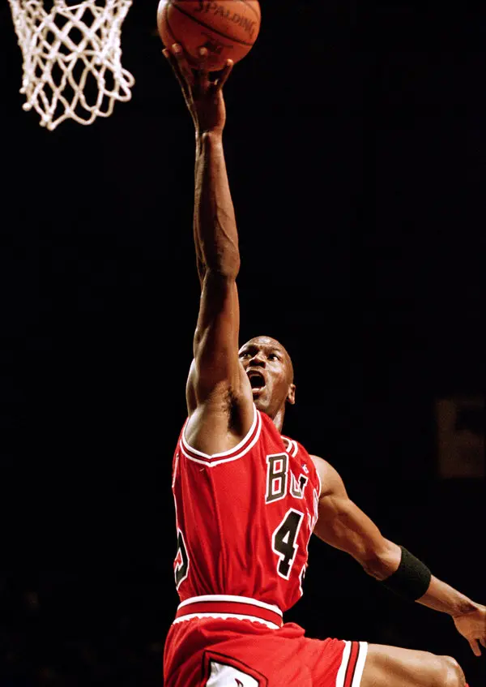

- Michael Jeffrey Jordan -
Born On - 17 FEB 1963
Michael Jordan (born February 17, 1963), also known by his initials MJ,[9] is an American former professional basketball player and businessman. His biography on the official National Basketball Association (NBA) website states: "By acclamation, Michael Jordan is the greatest basketball player of all time. He played fifteen seasons in the NBA, winning six NBA championships with the Chicago Bulls. Jordan is the principal owner and chairman of the Charlotte Hornets of the NBA and of 23XI Racing in the NASCAR Cup Series. He was integral in popularizing the basketball sport and the NBA around the world in the 1980s and 1990s,becoming a global cultural icon.
Biographies
-
Born 17 February 1963 in Fort Greene, Brooklyn, New York City
Nickname Air Jordan - NBA draft 1984 / Round: 1 / Pick: 3rd overall Selected by the Chicago Bulls
- Playing career 1984–1993, 1995–1998, 2001–2003
- Career NBA statistics Points 32,292 (30.1 ppg) Rebounds 6,672 (6.2 rpg) Assists 5,633 (5.3 apg)
- Olympic Games Gold medal – first place 1984 Los Angeles Men's basketball Gold medal – first place 1992 Barcelona Men's basketball